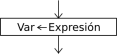

Asignaci?n

La instrucci?n de asignaci?n permite almacenar una valor en una variable.
<variable > <- <expresi?n> ;
Al ejecutarse la asignaci?n, primero se eval?a la expresi?n de la derecha y luego se asigna el resultado a la variable de la izquierda. El tipo de la variable y el de la expresi?n deben coincidir.
Si la variable de la izquierda no exist?a previamente a la asignaci?n, se crea. Si la variable exist?a se pierde su valor anterior y toma el valor nuevo, raz?n por la cual se dice que la asignaci?n es "destructiva" (destruye el valor que ten?a la variable de la izquierda). Los contenidos de las variables que intervienen en la expresi?n de la derecha no se modifican.
Existen dos operadores de asignaci?n alternativos que pueden utilizarse indistintamente en cualquier caso, pero la habilitaci?n del segundo (=) depende del perfil de lenguaje seleccionado.
<variable> := <expresi?n> ;
<variable> = <expresi?n> ;